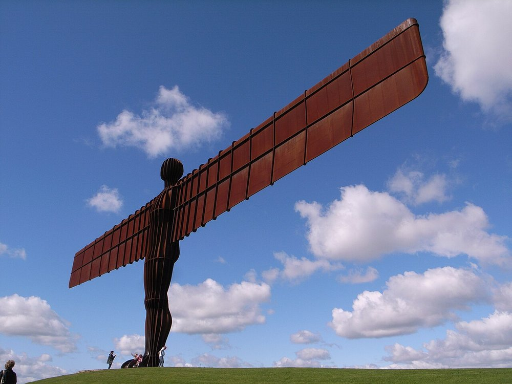

Angel of the North
Antony Gormley · 1998 · Weathering steel · 20 m high, 54 m wingspan
In copyright. Look and learn: shown for study, not for download. · Photo: saw2th, CC BY-SA 2.0
Gateshead Council commissioned the sculpture for the site of a former colliery. Gormley, who was 43 when commissioned in 1994, was reluctant at first and agreed after visiting the site. The design is based on his own body. It stands 20 metres tall with a wingspan of 54 metres, weighs 208 tonnes, and was made by Hartlepool Steel Fabrications. It was transported overnight on 14 February 1998 and erected the next morning.